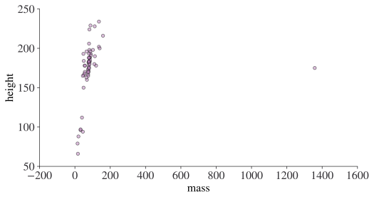
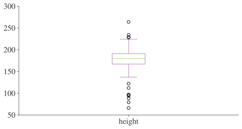
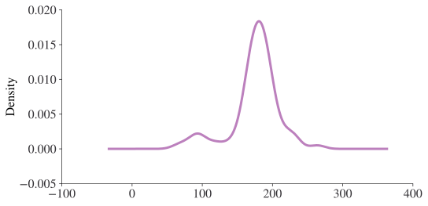

import matplotlib.pyplot as plt
import numpy as np
import pandas as pdData Analysis Quickstart
Introduction
Here we’ll do a whistlestop tour of data analysis in Python using a structure called a dataframe. Dataframes do everything a spreadsheet does, and a whole lot more. At their simplest, dataframes are a tabular representation of data with rows and columns. The data in each column can be anything; text, numbers, Python objects such as lists or dictionaries, or even other dataframes!
The ability to extract, clean, and analyse data is one of the core skills any economist needs. Fortunately, the (open source) tools that are available for data analysis have improved enormously in recent years, and working with them can be a delight——even the most badly formatted data can be beaten into shape. You may be sceptical that these open source tools can be as powerful as the costly, closed source tools you may already know: but, over time, you’ll come to see how they do far, far more, and do it faster too.
In this chapter, we’ll see analysis on a single dataframe using the Star Wars’ characters dataset as an example. For a more thorough grounding in using data, see the next chapter (Working with Data).
This chapter uses the pandas and numpy packages. If you’re running this code, you may need to install these packages. If you don’t have these installed, you can install them by running either uv add packagename on your computer’s command line (the instructions are conda install packagename if you’re using Miniconda). You can find a brief guide to installing packages in Preliminaries.
This chapter is hugely indebted to the fantastic Python Data Science Handbook, and both the pandas documentation and amazing introductory tutorials.
Loading data and checking datatypes
First we must import the packages we’ll be using in the rest of this chapter.
# Set seed for random numbers
seed_for_prng = 78557
prng = np.random.default_rng(
seed_for_prng
) # prng=probabilistic random number generatorLoading data into a dataframe is achieved with commands like df = pd.read_csv(...) or df = pd.read_stata(...). Let’s load the Star Wars data from the internet:
df = pd.read_csv(
"https://github.com/aeturrell/coding-for-economists/raw/main/data/starwars.csv",
index_col=0,
).dropna(subset=["species"])
# Check info about dataframe
df.info()<class 'pandas.core.frame.DataFrame'>
Index: 82 entries, 0 to 86
Data columns (total 8 columns):
# Column Non-Null Count Dtype
--- ------ -------------- -----
0 name 82 non-null object
1 height 77 non-null float64
2 mass 58 non-null float64
3 hair_color 77 non-null object
4 eye_color 80 non-null object
5 gender 79 non-null object
6 homeworld 74 non-null object
7 species 82 non-null object
dtypes: float64(2), object(6)
memory usage: 5.8+ KBLook at the first few rows with head()
df.head()| name | height | mass | hair_color | eye_color | gender | homeworld | species | |
|---|---|---|---|---|---|---|---|---|
| 0 | Luke Skywalker | 172.0 | 77.0 | blond | blue | male | Tatooine | Human |
| 1 | C-3PO | 167.0 | 75.0 | NaN | yellow | NaN | Tatooine | Droid |
| 2 | R2-D2 | 96.0 | 32.0 | NaN | red | NaN | Naboo | Droid |
| 3 | Darth Vader | 202.0 | 136.0 | none | yellow | male | Tatooine | Human |
| 4 | Leia Organa | 150.0 | 49.0 | brown | brown | female | Alderaan | Human |
TipExercise
What happens if you pass a number to head(), eg head(10)?
Filter rows and columns with conditions using df.loc[condition(s) or row(s), column(s)]
.loc stands for location and allows you to filter (aka subset) a dataframe. .loc works like an index, so it always comes with square brackets, eg df.loc[...].
loc takes two arguments. The first is a list of the names of the rows that you’d like to select or a condition (ie a list of booleans with the same length as the dataframe) that selects certain rows. Remember, you can easily create a series of booleans by checking a column against a condition, for example df['column1'] == 'black'.
The second argument consists of a list of column names you’d like to select. In both cases, : is shorthand for ‘use all rows’ or ‘use all columns’. If you have either condition(s) or column(s) (but not both), you can simply write df[condition(s)] or df[column(s)].
Here’s an example with a condition built up out of two parts and a list of columns:
df.loc[(df["hair_color"] == "brown") & (df["eye_color"] == "blue"), ["name", "species"]]| name | species | |
|---|---|---|
| 6 | Beru Whitesun lars | Human |
| 12 | Chewbacca | Wookiee |
| 17 | Jek Tono Porkins | Human |
| 30 | Qui-Gon Jinn | Human |
| 58 | Cliegg Lars | Human |
| 77 | Tarfful | Wookiee |
TipExercise
Using loc, filter the dataframe to mass greater than 50 for the name and homeworld columns
Sort rows or columns with .sort_values()
Use sort_values(columns, ascending=False) for descending order.
df.sort_values(["height", "mass"])| name | height | mass | hair_color | eye_color | gender | homeworld | species | |
|---|---|---|---|---|---|---|---|---|
| 18 | Yoda | 66.0 | 17.0 | white | brown | male | NaN | Yoda's species |
| 71 | Ratts Tyerell | 79.0 | 15.0 | none | NaN | male | Aleen Minor | Aleena |
| 28 | Wicket Systri Warrick | 88.0 | 20.0 | brown | brown | male | Endor | Ewok |
| ... | ... | ... | ... | ... | ... | ... | ... | ... |
| 82 | Rey | NaN | NaN | brown | hazel | female | NaN | Human |
| 83 | Poe Dameron | NaN | NaN | brown | brown | male | NaN | Human |
| 84 | BB8 | NaN | NaN | none | black | none | NaN | Droid |
82 rows × 8 columns
TipExercise
Using sort_values(), sort the dataframe by the name column.
Choose multiple rows or columns using slices
Slices can be passed by name using .loc[startrow:stoprow:step, startcolumn:stopcolumn:step] or by position using .iloc[start:stop:step, start:stop:step].
Choosing every 10th row from the second, and the columns between ‘name’ and ‘gender’:
df.loc[2::10, "name":"gender"]| name | height | mass | hair_color | eye_color | gender | |
|---|---|---|---|---|---|---|
| 2 | R2-D2 | 96.0 | 32.0 | NaN | red | NaN |
| 12 | Chewbacca | 228.0 | 112.0 | brown | blue | male |
| 22 | Bossk | 190.0 | 113.0 | none | red | male |
| ... | ... | ... | ... | ... | ... | ... |
| 54 | Plo Koon | 188.0 | 80.0 | none | black | male |
| 64 | Bail Prestor Organa | 191.0 | NaN | black | brown | male |
| 75 | Shaak Ti | 178.0 | 57.0 | none | black | female |
8 rows × 6 columns
Note that loc only works here with numbers for rows because it just so happens that the names of the rows are numbers. If the rows had names that were strings, and we wanted to subset rows by their index position, we would have to use iloc instead.
Choosing the first 5 rows and the last 2 columns by index position:
df.iloc[:5, -2:]| homeworld | species | |
|---|---|---|
| 0 | Tatooine | Human |
| 1 | Tatooine | Droid |
| 2 | Naboo | Droid |
| 3 | Tatooine | Human |
| 4 | Alderaan | Human |
TipExercise
Using .iloc, display the first 6 rows and last 6 columns.
Randomly selecting a sample using .sample
.sample(n) randomly selects n rows, .sample(frac=0.4) selects 40% of the data, replace=True samples with replacement, and passing weights= selects a number or fraction with the probabilities given by the passed weights. (Note that weights passed should have the same length as the dataframe.)
Taking a sample of 5 rows:
df.sample(5)| name | height | mass | hair_color | eye_color | gender | homeworld | species | |
|---|---|---|---|---|---|---|---|---|
| 33 | Jar Jar Binks | 196.0 | 66.0 | none | orange | male | Naboo | Gungan |
| 67 | Dexter Jettster | 198.0 | 102.0 | none | yellow | male | Ojom | Besalisk |
| 13 | Han Solo | 180.0 | 80.0 | brown | brown | male | Corellia | Human |
| 32 | Finis Valorum | 170.0 | NaN | blond | blue | male | Coruscant | Human |
| 82 | Rey | NaN | NaN | brown | hazel | female | NaN | Human |
TipExercise
Use .sample() to sample 5% of the dataframe.
Rename with .rename()
You can rename all columns by passing a function, for instance df.rename(columns=str.lower) to put all columns in lower case. Alternatively, use a dictionary to say which columns should be mapped to what:
df.rename(columns={"homeworld": "home_world"})| name | height | mass | hair_color | eye_color | gender | home_world | species | |
|---|---|---|---|---|---|---|---|---|
| 0 | Luke Skywalker | 172.0 | 77.0 | blond | blue | male | Tatooine | Human |
| 1 | C-3PO | 167.0 | 75.0 | NaN | yellow | NaN | Tatooine | Droid |
| 2 | R2-D2 | 96.0 | 32.0 | NaN | red | NaN | Naboo | Droid |
| ... | ... | ... | ... | ... | ... | ... | ... | ... |
| 83 | Poe Dameron | NaN | NaN | brown | brown | male | NaN | Human |
| 84 | BB8 | NaN | NaN | none | black | none | NaN | Droid |
| 86 | Padmé Amidala | 165.0 | 45.0 | brown | brown | female | Naboo | Human |
82 rows × 8 columns
Add new columns with .assign() or assignment
Very often you will want to create new columns based on existing columns.

There are two ways to do this. Let’s see them both with an example where we’d like to create a new column that contains height in metres, called "height_m:.
- The first, and most commonly used, is called assignment and involves just entering the new column name within your dataframe and putting it on the left-hand side of an assignment expression that has an operation based on existing dataframe columns on the right-hand side. For example,
df['height_m'] = df['height']/100. - The second is to use the
assign()method on a dataframe directly. In this case, the assignment statement appears inside the brackets but you don’t need to write as much text because it’s clear from the context that, on the left-hand side of the assignment, we’re talking about the given dataframe. An example isdf.assign(height_m=df["height"] / 100).
Let’s see working examples of both of these assignment methods.
First let’s use the assignment approach:
df["height_m"] = df["height"] / 100
df.head()| name | height | mass | hair_color | eye_color | gender | homeworld | species | height_m | |
|---|---|---|---|---|---|---|---|---|---|
| 0 | Luke Skywalker | 172.0 | 77.0 | blond | blue | male | Tatooine | Human | 1.72 |
| 1 | C-3PO | 167.0 | 75.0 | NaN | yellow | NaN | Tatooine | Droid | 1.67 |
| 2 | R2-D2 | 96.0 | 32.0 | NaN | red | NaN | Naboo | Droid | 0.96 |
| 3 | Darth Vader | 202.0 | 136.0 | none | yellow | male | Tatooine | Human | 2.02 |
| 4 | Leia Organa | 150.0 | 49.0 | brown | brown | female | Alderaan | Human | 1.50 |
And now with the .assign() function:
df = df.assign(height_m=df["height"] / 100)
df.head()| name | height | mass | hair_color | eye_color | gender | homeworld | species | height_m | |
|---|---|---|---|---|---|---|---|---|---|
| 0 | Luke Skywalker | 172.0 | 77.0 | blond | blue | male | Tatooine | Human | 1.72 |
| 1 | C-3PO | 167.0 | 75.0 | NaN | yellow | NaN | Tatooine | Droid | 1.67 |
| 2 | R2-D2 | 96.0 | 32.0 | NaN | red | NaN | Naboo | Droid | 0.96 |
| 3 | Darth Vader | 202.0 | 136.0 | none | yellow | male | Tatooine | Human | 2.02 |
| 4 | Leia Organa | 150.0 | 49.0 | brown | brown | female | Alderaan | Human | 1.50 |
This was added to the end; ideally, we’d like it next to the height column, which we can achieve by sorting the columns (axis=1) alphabetically:
(df.assign(height_m=df["height"] / 100).sort_index(axis=1))| eye_color | gender | hair_color | height | height_m | homeworld | mass | name | species | |
|---|---|---|---|---|---|---|---|---|---|
| 0 | blue | male | blond | 172.0 | 1.72 | Tatooine | 77.0 | Luke Skywalker | Human |
| 1 | yellow | NaN | NaN | 167.0 | 1.67 | Tatooine | 75.0 | C-3PO | Droid |
| 2 | red | NaN | NaN | 96.0 | 0.96 | Naboo | 32.0 | R2-D2 | Droid |
| ... | ... | ... | ... | ... | ... | ... | ... | ... | ... |
| 83 | brown | male | brown | NaN | NaN | NaN | NaN | Poe Dameron | Human |
| 84 | black | none | none | NaN | NaN | NaN | NaN | BB8 | Droid |
| 86 | brown | female | brown | 165.0 | 1.65 | Naboo | 45.0 | Padmé Amidala | Human |
82 rows × 9 columns
To overwrite existing columns just use height = df['height']/100 with the assign method or df['height'] = df['height']/100 with an assignment expression.
TipExercise
Add a new column that gives the ratio of mass to height.
Summarise numerical values with .describe()
df.describe()| height | mass | height_m | |
|---|---|---|---|
| count | 77.000000 | 58.000000 | 77.000000 |
| mean | 175.103896 | 98.162069 | 1.751039 |
| std | 34.483629 | 170.810183 | 0.344836 |
| ... | ... | ... | ... |
| 50% | 180.000000 | 79.000000 | 1.800000 |
| 75% | 191.000000 | 84.750000 | 1.910000 |
| max | 264.000000 | 1358.000000 | 2.640000 |
8 rows × 3 columns
Group variables values with .groupby()
df.groupby("species")[["height", "mass"]].mean()| height | mass | |
|---|---|---|
| species | ||
| Aleena | 79.0 | 15.0 |
| Besalisk | 198.0 | 102.0 |
| Cerean | 198.0 | 82.0 |
| ... | ... | ... |
| Xexto | 122.0 | NaN |
| Yoda's species | 66.0 | 17.0 |
| Zabrak | 173.0 | 80.0 |
37 rows × 2 columns
TipExercise
Find the standard deviation (using std()) of masses by homeworld.
Add transformed columns using .transform()
Quite often, it’s useful to put a column into a dataframe that is the result of an intermediate groupby and aggregation. For example, subtracting the group mean or normalisation. Transform does this and returns a transformed column with the same shape as the original dataframe. Transform preserves the original index. (There are other methods, such as apply, that return a new dataframe with the groupby variables as a new index.)
Below is an example of transform being used to demean a variable according to the mean by species. Note that we are using lambda functions here. Lambda functions are a quick way of writing functions without needing to give them a name, e.g. lambda x: x+1 defines a function that adds one to x. In the example below, the x in the lambda function takes on the role of mass grouped by species.
df["mass_demean_species"] = df.groupby("species")["mass"].transform(
lambda x: x - x.mean()
)
df.head()| name | height | mass | hair_color | eye_color | gender | homeworld | species | height_m | mass_demean_species | |
|---|---|---|---|---|---|---|---|---|---|---|
| 0 | Luke Skywalker | 172.0 | 77.0 | blond | blue | male | Tatooine | Human | 1.72 | -5.781818 |
| 1 | C-3PO | 167.0 | 75.0 | NaN | yellow | NaN | Tatooine | Droid | 1.67 | 5.250000 |
| 2 | R2-D2 | 96.0 | 32.0 | NaN | red | NaN | Naboo | Droid | 0.96 | -37.750000 |
| 3 | Darth Vader | 202.0 | 136.0 | none | yellow | male | Tatooine | Human | 2.02 | 53.218182 |
| 4 | Leia Organa | 150.0 | 49.0 | brown | brown | female | Alderaan | Human | 1.50 | -33.781818 |
TipExercise
Create a height_demean_homeworld column that gives the height column with the mean height by homeworld subtracted.
Make quick charts with .plot.*()
Including scatter, area, bar, box, density, hexbin, histogram, kde, and line.
df.plot.scatter("mass", "height", alpha=0.5);
df.plot.box(column="height");
df["height"].plot.kde(bw_method=0.3);
Export results and descriptive statistics
You’ll often want to export your results to a latex file for inclusion in a paper, presentation, or poster. Let’s say we had some descriptive statistics on a dataframe:
table = df[["mass", "height"]].agg(["mean", "std"])
table| mass | height | |
|---|---|---|
| mean | 98.162069 | 175.103896 |
| std | 170.810183 | 34.483629 |
You can export this to a range of formats, including string, html, xml, markdown, the clipboard (so you can paste it), Excel, and more. In your favourite IDE (integrated development environment) with a Python language server (eg Visual Studio Code, JupyterLab) start typing table.to and a list of possible methods beginning to should appear, including to_string().
Here is an example of exporting your pandas table to CSV (comma separated values):
table.to_csv()',mass,height\nmean,98.16206896551724,175.1038961038961\nstd,170.81018276436322,34.483628615842896\n'One output format that doesn’t conform to this is LaTeX, for which you need the following:
print(table.style.to_latex(caption="A Table", label="tab:descriptive"))\begin{table}
\caption{A Table}
\label{tab:descriptive}
\begin{tabular}{lrr}
& mass & height \\
mean & 98.162069 & 175.103896 \\
std & 170.810183 & 34.483629 \\
\end{tabular}
\end{table}
Writing to the terminal isn’t that useful for getting your paper or report done! To export to a file, use table.style.to_latex('file.tex', ...) for LaTeX and table.to_csv('file.csv', ...).
TipExercise
Try exporting the table above using the to_string("table.txt") method.
If you are running this locally, the file should appear in the directory in which you are running this notebook.
If you are using Google Colab to do these exercises, you can check that the file exported by running !ls in a new code cell to see all files in the current notebook directory. To get the contents of the file you created, run !cat table.txt.
Summary
This has been a quick tour of what pandas can do, and shows the power of this ubiquitous tool, but we’ve barely seen a fraction of its features. The next chapter will go deeper into how to use pandas.